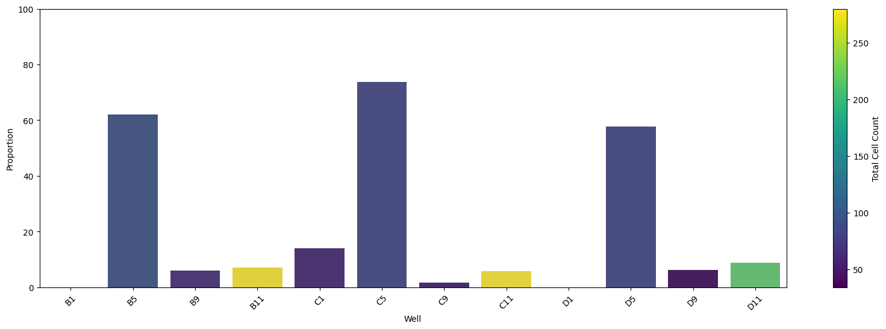

ContaminationDetector in action¶
In this example, we apply ContaminationDetector from coSMicQC on an example dataset from the NF1 project.
The NF1 project example includes wells from a cell line that was contaminated with mycoplasma. In the wet lab, these cells were detected as negative for mycoplasma. We do not want to process contaminated cells, so we can use this methodology to confirm the contamination and the extent of it on the plate.
The result of this method is either a pass or fail. If the data is clean, then the method stops at step 1 and says the data is ready for further downstream analysis. If the data has contamination, this method will continue processing after step 1 to determine if the problem is for the whole plate or part of the plate.
import pandas as pd
from cosmicqc import ContaminationDetector
# set a path for the NF1 parquet-based dataset
data_path = (
"../../../tests/data/cytotable/NF1_cellpainting_data/Plate_3_filtered.parquet"
)
# Load in the dataset
filtered_nf1_df = pd.read_parquet(data_path)
# Look over the data to check it is correct
print(filtered_nf1_df.shape)
filtered_nf1_df.head()
(1355, 2321)
| Metadata_ImageNumber | Image_Metadata_Plate | Metadata_number_of_singlecells | Image_Metadata_Site | Image_Metadata_Well | Metadata_Cells_Number_Object_Number | Metadata_Cytoplasm_Parent_Cells | Metadata_Cytoplasm_Parent_Nuclei | Metadata_Nuclei_Number_Object_Number | Image_FileName_CY5 | ... | Nuclei_Texture_Variance_DAPI_3_02_256 | Nuclei_Texture_Variance_DAPI_3_03_256 | Nuclei_Texture_Variance_GFP_3_00_256 | Nuclei_Texture_Variance_GFP_3_01_256 | Nuclei_Texture_Variance_GFP_3_02_256 | Nuclei_Texture_Variance_GFP_3_03_256 | Nuclei_Texture_Variance_RFP_3_00_256 | Nuclei_Texture_Variance_RFP_3_01_256 | Nuclei_Texture_Variance_RFP_3_02_256 | Nuclei_Texture_Variance_RFP_3_03_256 | |
|---|---|---|---|---|---|---|---|---|---|---|---|---|---|---|---|---|---|---|---|---|---|
| 0 | 30 | Plate_3 | 279 | 15 | B11 | 1 | 1 | 2 | 2 | B11_01_3_15_CY5_001_illumcorrect.tiff | ... | 619.327600 | 594.798669 | 271.137249 | 268.157417 | 311.088206 | 282.370923 | 198.402061 | 202.133683 | 203.094321 | 193.875072 |
| 1 | 31 | Plate_3 | 279 | 16 | B11 | 1 | 1 | 2 | 2 | B11_01_3_16_CY5_001_illumcorrect.tiff | ... | 323.170295 | 321.310711 | 34.841145 | 35.139114 | 38.075206 | 38.080602 | 131.691809 | 126.174866 | 136.433036 | 132.735107 |
| 2 | 34 | Plate_3 | 279 | 19 | B11 | 1 | 1 | 2 | 2 | B11_01_3_19_CY5_001_illumcorrect.tiff | ... | 321.457911 | 314.851226 | 286.810209 | 261.637391 | 257.878700 | 259.463388 | 157.252242 | 156.042241 | 154.576787 | 154.894240 |
| 3 | 35 | Plate_3 | 279 | 1 | B11 | 1 | 1 | 2 | 2 | B11_01_3_1_CY5_001_illumcorrect.tiff | ... | 1487.354034 | 1468.971582 | 516.742751 | 489.945367 | 519.912829 | 510.173091 | 369.462002 | 366.631748 | 383.771987 | 364.529179 |
| 4 | 44 | Plate_3 | 279 | 6 | B11 | 1 | 1 | 2 | 2 | B11_01_3_6_CY5_001_illumcorrect.tiff | ... | 508.054695 | 501.770497 | 51.695327 | 54.248623 | 57.984869 | 52.494053 | 262.420251 | 255.894670 | 259.081931 | 266.519397 |
5 rows × 2321 columns
# Instantiate the ContaminationDetector class and run the contamination detection process
detector = ContaminationDetector(
dataframe=filtered_nf1_df, nucleus_channel_naming="DAPI"
).run()
Running step 1...
Summary:
Check Result
----------------------- --------
Texture skewed? ✅
Nucleus shape variable? ❌
Interpretation:
Contamination detected! 🚨
Anomalous texture around nuclei detected but nuclei segmentation not clearly impacted.
Proceeding to step 2...
Running step 2...
Summary:
Check Result
------------------------------------------------------- --------
Texture skewed? ✅
Nucleus shape variable? ❌
Whole plate contaminated due to abnormal texture? ❌
Whole plate contaminated due to abnormal nucleus shape? ❌
Interpretation:
Partial plate contamination in texture only. Proceed to step 3.
Running step 3...
Finding outlier cells with anomalous texture around the nucleus...
Number of outliers: 198 (14.61%)
Outliers Range:
Cytoplasm_Texture_InfoMeas1_DAPI_3_02_256 Min: -0.3808007336913458
Cytoplasm_Texture_InfoMeas1_DAPI_3_02_256 Max: -0.23152918999076016
Number of outliers: 120 (8.86%)
Outliers Range:
Cytoplasm_Granularity_2_DAPI Min: 1.8500394938002351
Cytoplasm_Granularity_2_DAPI Max: 27.639655282904474
Total number of outliers detected: 242

Number of wells in the top 25%: 3
Wells in the top 25% of highest outlier proportions:
B5, C5, D5
In this example, we can see that the detector has found anomalous texture surrounding the nucleus from this plate. This is a problem and could likely reflect contamination.
In step 2, based on the mean of the texture, it was found that this problem only impacts part of the plate.
In step 3, we found 3 wells that have high proportion of outlier single-cells with abnormal texture. This was concluded to be one cell line that had mycoplasma contamination on the plate, while the rest of the cell lines were fine.